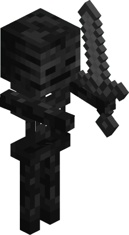

- 

เกมส์ที่ได้รับความนิยมมากที่สุด ในเกมส์ที่เป็น Sandbox หลายๆคนคงนึกถึง Minecarft เกมส์นี้นั้น สร้างมาโดยค่าย Mojang (มูแยง) โดยสร้างขึ้นโดย Markus “Notch” Persson และค่าย Mojang จึงนำมาพัฒนาต่อ โดยจุดเด่นของเกมนั้นจะอยู่ที่อิสระในการเล่นเพราะว่าเรานั้นสามารถ เลือกที่จะสร้างอะไรต่างๆนาๆ ได้อย่าอิสระถ้าจะบอกว่าเป็นเกมส์ที่เหมือนกับ simulator ตัวเราเองในอีกโลกหนึ่งเลยก็คงไม่ผิด โดยภายในเกมส์นั้นจะมีโหมดต่างๆ โดยเกมส์นี้นั้นเป็น เกมส์ที่สามารถเล่น Online กันได้ จริงๆแล้วเกมส์ Minecraft ในตอนแรกนั้นจะได้รับแรงบันดาลใจ มาจาก 3 เกมส์ นั้นก็คือ วาร์ฟฟอร์เทรส, ดันเจี้ยนคีปเปอร์ และ อินฟินิไมเนอร์ โดยตัวเกมส์ Minecraft เปิดตัวครั้งแรกเมื่อ 17 พฤษภาคม ค.ศ. 2009 โดยได้เปิดตัว ที่ทีไอจีซอร์สฟอรัมส์โดยตัว แพร์สซอนได้ก่อตั้งบริษัทมูแยง ในวันที่ 10 ตุลาคม ค.ศ. 2010 แพร์สซอนได้ประกาศว่า Minecraft จะเข้าสู่ช่วงการทดสอบบีตา (Beta) ของมันใน วันที่ 20 ธันวาคม ค.ศ. 2010 โดยตัวเกมส์นั้นได้ถูกพัฒนาไปเรื่อยๆจนถึง 1 ธันวาคม 2011 ก็ได้ แยนส์ “แย็บ” แบร์แกนสแตน ได้เข้ามาเพื่อพัฒนาในเรื่องความคิดสร้างสรรค์ต่างๆภายในเกมส์ โดยให้ แพร์สซอนนั้นไปเป็นหัวหน้าผู้พัฒนาส่วนในเรื่องเสียงนั้นก็ได้ Daniel “C418” Rosenfeld มาดูแลโดยเพลงประกอบกันจะเป็นเพลงประเภท แอมเบียนต์ ไม่ใช่เพลง บรรเลงแต่อย่างใด